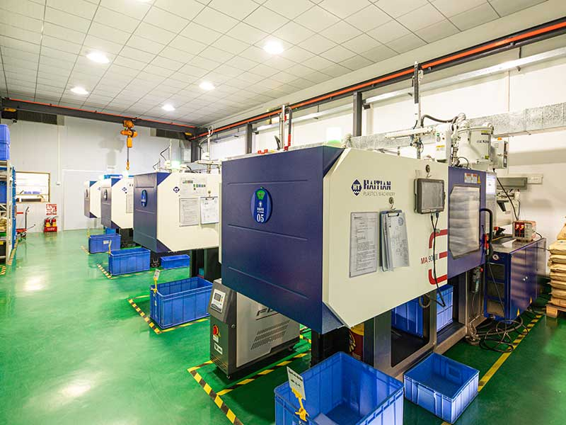
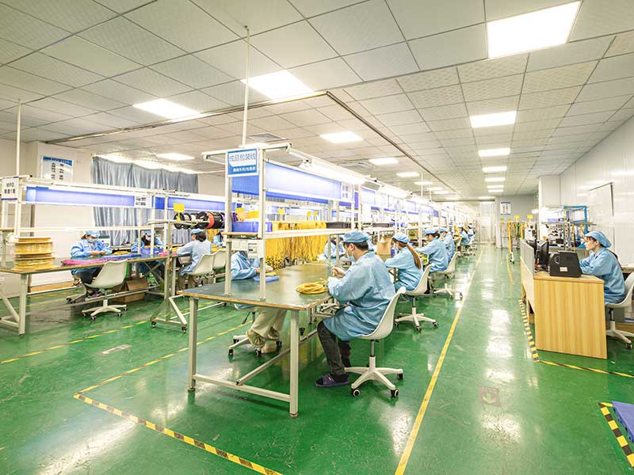

HIGH-DENSITY INTERFACES
MOFC Connectors
Compact, high-density push-pull connectors for multi-fiber optical connections.
From a precision component
to a complete connection.
OUR PRODUCTS
From high-density interfaces to the ferrules and assemblies behind them. Find the right building blocks for your network.
10 product families
HIGH-DENSITY INTERFACES
Compact, high-density push-pull connectors for multi-fiber optical connections.
HOST & MODULE CONNECTIVITY
Precision blind-mate optical connectivity for host and module interfaces in CPO.
PRECISION AT THE CORE
Precision multi-fiber alignment, with configurations for different optical applications.
MULTI-FIBER ASSEMBLIES
Multi-fiber cable assemblies for data center interconnects and structured cabling.
No matching products. Try another search.
WHERE CONNECTIONS MATTER
OUR COMPANY
Small components.
Extraordinary attention to detail.
Fukushima Souhatsu Giken develops and manufactures precision resin components for optical communications, with MT ferrules at the core.
From mold design and machining to molding and inspection, we support customer-specific product development with precision equipment and specialist craftsmanship.
Inside our manufacturing approach ↘ENGINEERING & MANUFACTURING
Japanese development expertise, supported by the wider FSG manufacturing network.
Customer requirements translated into precision molds and component designs.
Resin molding for MT ferrules and optical connection components.
Dimensional inspection of fiber holes, guide-pin holes and precision parts.
Optical testing, interferometry and polarity checks for cable assemblies.


LET’S MAKE THE CONNECTION
Talk to us about your next optical interconnect.
Products, prototypes and custom configurations.
International Sales Executive
dmitriy@u-flex.com.hk ↗Discuss your project ↗